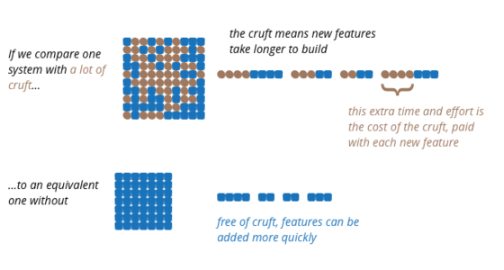
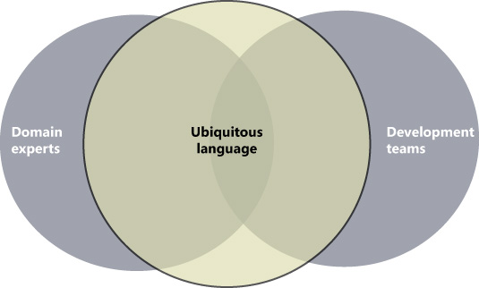
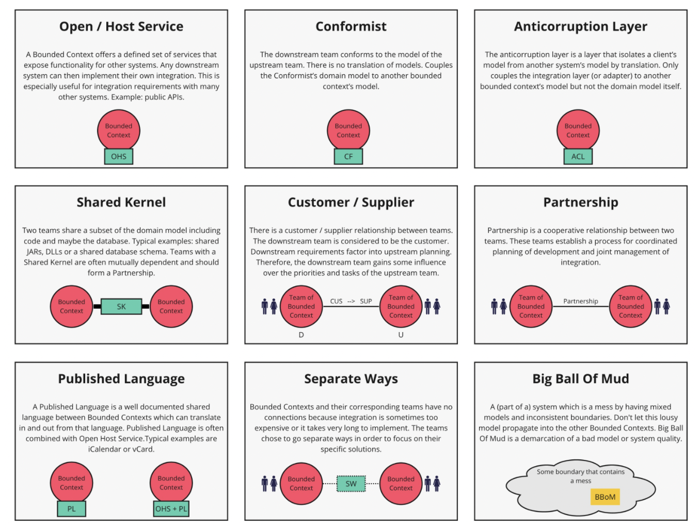
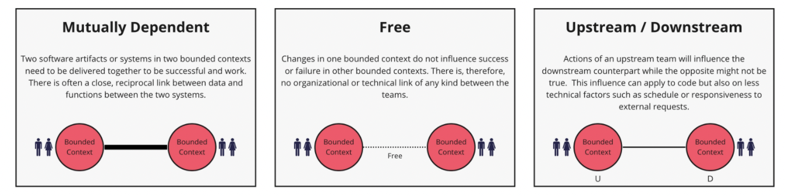
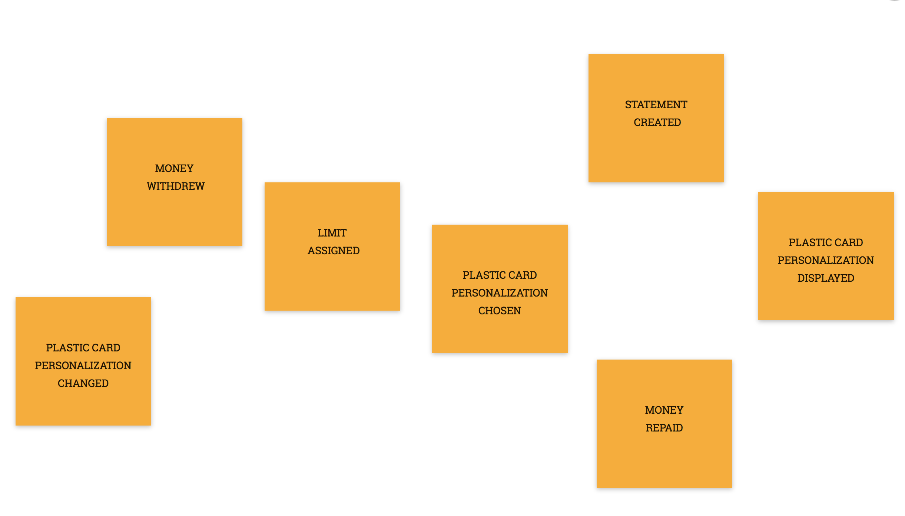
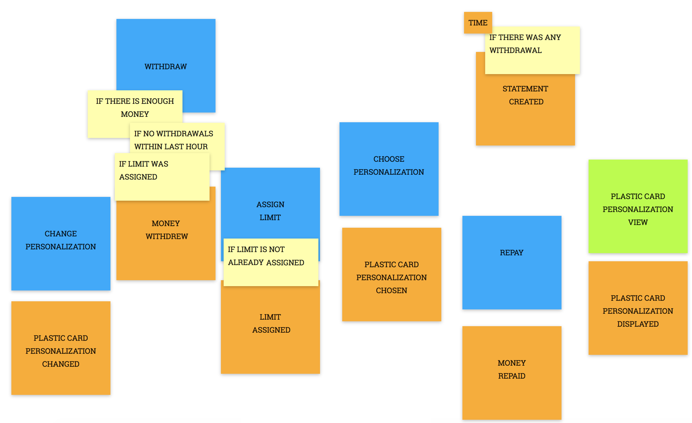
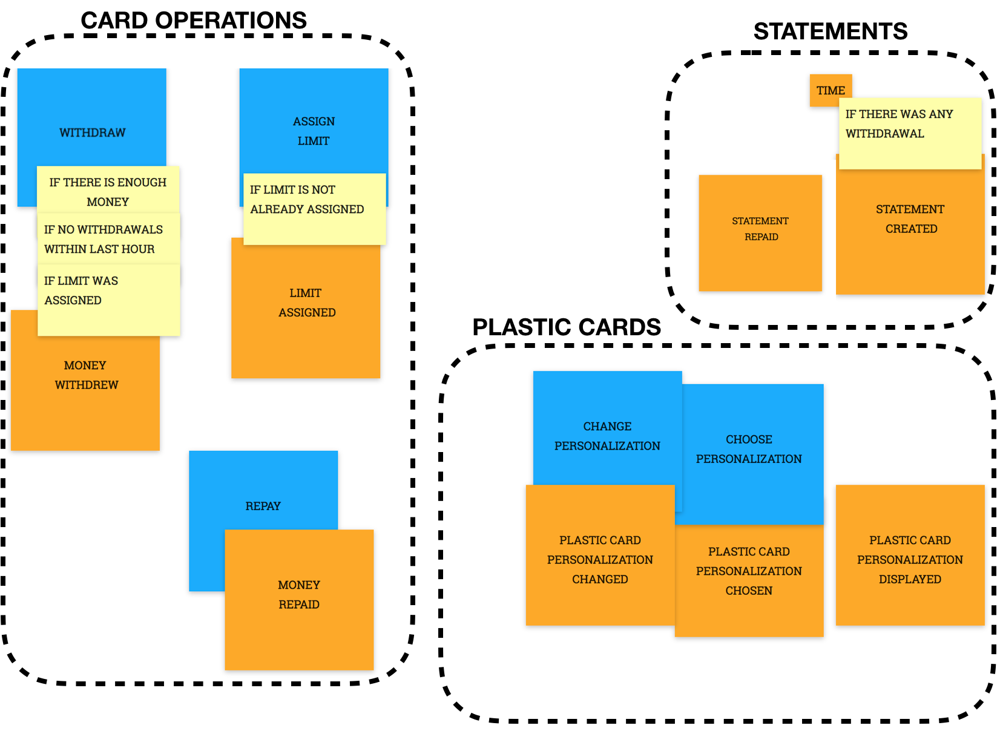

101 DDD
Mitigating the "Ball of mud" in your products/services with Domain Driven Design.

101 DDD
Follow the talk from with your smartphone:

I can't teach anything. I can only make you think.- Socrates
Can't see the forest for the trees- John Heywood
Any organization that designs a system (defined broadly) will produce a design whose structure is a copy of the organization's communication structure.— Melvin E. Conway

Agenda
- Who I am
- Goals
- Context
- DDD: "what when why where how"
- Strategical DDD
- Implementing Strategical DDD
- Tactical DDD
- Implementing Tactical DDD
- Who to follow about DDD
- References
Who I am
Juan Antonio Breña Moral
|
|
Technical Architect & Innovation Estratego @ VASS Associate Professor @ ICAI STEAM Teacher @ Space Math @juanantoniobm | Github |
Who I am
Xavier L
PENDING
Goals
- Explain fundamentals about DDD
- Show few techniques from the ecosystem to improve your DDD
- Show JVM libraries related to DDD
- Encourage to design & implement software that it is easy to operate, maintain & evolve
- Mitigate "the ball of mud" effect
Goals
- Understand the following workflow:
Source: https://contextmapper.org/media/978-3-030-67445-8_11_AuthorsCopy.pdf
Context
What is a Software architecture?
Architecture is about the important stuff. Whatever that is.
Source: https://martinfowler.com/architecture/
Context
Tackling Complexity in the Heart of Software

Source: https://www.dddcommunity.org/book/evans_2003/
Context
Timeline

Source: https://eventmodeling.org/about/
Context
Microservices with Spring Cloud Kubernetes

Source: https://tanzu.vmware.com/developer/guides/kubernetes/app-enhancements-spring-k8s/
Context
Have that designs an enough detail to create a backlog to start the implementation phase?
Context
Or maybe your design suffer with: Anemic Domain Model

Timeline
Timeline
2003 - Domain Driven Design
Timeline
2003 - Domain Driven Design

Timeline
2003 - Domain Driven Design

Context
Did you read a book about DDD previously?

DDD: "what when why where how"
What is DDD?
Domain-driven design (DDD) is the concept that the structure and language of software code (class names, class methods, class variables) should match the business domain.
Source: Wikipedia
DDD: "what when why where how"
When use DDD?
- Greenfield projects
- Brownfield projects
In any moment :)
DDD: "what when why where how"
Why use DDD?
- Improve the design of your project
- Reduce the complexity to maintain software in Production stage
DDD: "what when why where how"
Where use DDD?
You could apply DDD at:
- Microservice Level
- Squad Level
- Guild Level
- Product Level
Depends of the DDD Skills 🤷
DDD: "what when why where how"
How use DDD?
You could use DDD:
- Strategically
- Tactically
DDD: "what when why where how"
DDD Vocabulary

Strategic DDD
Define the Ubiquitous Language, the Bounded contexts and the Context maps

Strategic DDD
Concepts:
- The Ubiquitous Language
- The Bounded contexts
- The Context maps
Strategic DDD
The Ubiquitous Language
A language structured around the domain model and used by all team members within a bounded context to connect all the activities of the team with the software.
Strategic DDD
The Ubiquitous Language
Source: https://blog.tekaris.com/blog/introduction-ubiquitous-language/
Strategic DDD
The Ubiquitous Language
Strategic DDD
The Bounded contexts
A description of a boundary (typically a subsystem, or the work of a particular team) within which a particular model is defined and applicable.
Strategic DDD
The Bounded contexts

Source: https://martinfowler.com/bliki/BoundedContext.html
Strategic DDD
The Context maps
Context Maps describe the contact between bounded contexts and teams with a collection of patterns. There are nine context map patterns and three different team relationships.
Strategic DDD
The Context maps patterns:
Source: https://github.com/ddd-crew/context-mapping
Strategic DDD
The Context maps patterns: Open Host Service
This pattern addresses the case where the power is skewed toward the consumers. The supplier is interested in protecting its consumers and providing the best service possible.
To protect the consumers from changes in its implementation, the upstream supplier decouples its implementation model from the public interface.
Strategic DDD
The Context maps patterns: Open Host Service
The supplier’s public interface is not intended to conform to its ubiquitous language. Instead, it is intended to expose a protocol convenient for the consumers
Strategic DDD
The Context maps patterns: Open Host Service
expressed in an integration-oriented language. Hence, the public protocol is called the “published language.”
In a sense, the open-host service pattern is a reversal of the anticorruption layer pattern: instead of the consumer, the supplier implements the translation of its internal model.
Strategic DDD
The Context maps patterns: Open Host Service
Context mapper syntax:
PrintingContext [U,OHS]->[D,ACL] PolicyManagementContext {
implementationTechnology = "SOAP"
}
Source: https://contextmapper.org/docs/open-host-service/
Strategic DDD
The Context maps patterns: Conformist
This relationship describes the relationship of 2 bounded context, where the upstream has no interest in supporting the downstream for whatever reason. Instead, the downstream must conform to whatever the upstream provides. This can happen when integrating a new feature with a large, existing solution that is well established; or using a set of APIs, where the downstream is not the sole customer.
Strategic DDD
The Context maps patterns: Conformist
Context mapper syntax:
PolicyManagementContext [D,CF]<-[U,OHS,PL] CustomerManagementContext {
implementationTechnology = "RESTful HTTP"
}
Source: https://contextmapper.org/docs/conformist/
Strategic DDD
The Context maps patterns: Anticorruption Layer
This is another upstream/downstream relationship at a lower level, where the downstream bounded context implements a layer between itself and the upstream. This layer is responsible for translating the objects given by the upstream into its own models. This approach will guarantee the integrity of the downstream bounded context and keeps it completely ignorant of any foreign concepts. This approach is generally useful for integrating new features to some existing legacy software, where you can treat the existing legacy software as a black box bounded context and create an ACL for the new feature.
Strategic DDD
The Context maps patterns: Anticorruption Layer
Context mapper syntax:
DebtCollection [D,ACL]<-[U,OHS,PL] PrintingContext {
implementationTechnology = "SOAP"
}
Source: https://contextmapper.org/docs/anticorruption-layer/
Strategic DDD
The Context maps patterns: Shared Kernel
2 or more bounded contexts can share a common model. In design terms, the Ubiquitous Language of this shared part is common both all relevent teams. In code terms, you may have a shared library, or a service. This is generally a small codebase but difficult to maintain as its related bounded contexts develop, as the teams will tend to go on separate ways as their own bounded contexts evolve.
Strategic DDD
The Context maps patterns: Shared Kernel
Context mapper syntax:
CargoBookingContext [SK]<->[SK] VoyagePlanningContext {
implementationTechnology = "Java Library"
}
Source: https://contextmapper.org/docs/shared-kernel/
Strategic DDD
The Context maps patterns: Customer/Supplier
This approach puts 2 bounded contexts into an upstream and downstream, where the upstream is the supplier, and has to try and meet the expectations of the customer (downstream). But the final decision of what the customer gets comes from the supplier. This typically works in an autonomous environment within the same organisation, or if the customer is the sole client of the supplier.
Strategic DDD
The Context maps patterns: Customer/Supplier
Context mapper syntax:
CustomerSelfServiceContext [D,C]<-[U,S] CustomerManagementContext
Source: https://contextmapper.org/docs/customer-supplier/
Strategic DDD
The Context maps patterns: Partnership
It describes more about the relationship between teams as oppose to actual code. This typically happens when 2 teams working on 2 bounded contexts have aligned and dependent set of goals. Each team should at least understand some of their partner’s Ubiquitous Language, namely the things that are interesting to their own context. This can work fairly well when both bounded contexts are at early stages of the project, where communication is quick and more efficient than implementing some of the other techniques. When both sides become more established, teams may incur too much commitment in understanding each other’s Ubiquitous Language. Of course, if a team was to work on both such bounded contexts, the ‘Partnership’ relationship would be much less costly.
Strategic DDD
The Context maps patterns: Partnership
Context mapper syntax:
ContractsContext [P]<->[P] ClaimsContext {
implementationTechnology = "Messaging"
}
Source: https://contextmapper.org/docs/partnership/
Strategic DDD
The Context maps patterns: Published Language
Common language for the translation between the models that are going to interact. For example JSON or XML. Usually associated with OHS. The advantage of using REST services is that in each request the PL can be specified by configuring the desired content type.
Strategic DDD
The Context maps patterns: Published Language
Context mapper syntax:
PolicyManagementContext [D,CF]<-[U,OHS,PL] CustomerManagementContext {
implementationTechnology = "RESTful HTTP"
}
Source: https://contextmapper.org/docs/published-language/
Strategic DDD
The Context maps team relationships
Source: https://github.com/ddd-crew/context-mapping
Implementing Strategical DDD
Techniques:
- Event Storming
- Example Mapping
Tool:
- Context Mapper
Process:
- Domain-Driven Design Starter Modelling Process
Implementing Strategical DDD
Event-Storming

Implementing Strategical DDD
Event-Storming
Event storming is a workshop-based method to quickly find out what is happening in the domain. The result is expressed in sticky notes on a wide wall. The business process is "stormed out" as a series of domain events which are denoted as orange stickies.
Implementing Strategical DDD
Event-Storming
Event storming can be used as a means for business process modeling and requirements engineering. The basic idea is to bring together software developers and domain experts and learn from each other.
Implementing Strategical DDD
Example: Discovering Domain Events
Source: https://spring.io/blog/2018/04/11/event-storming-and-spring-with-a-splash-of-ddd
Implementing Strategical DDD
Example: Discovering Commands & Queries

Source: https://spring.io/blog/2018/04/11/event-storming-and-spring-with-a-splash-of-ddd
Implementing Strategical DDD
Example: Discovering Invariants
Source: https://spring.io/blog/2018/04/11/event-storming-and-spring-with-a-splash-of-ddd
Implementing Strategical DDD
Example: Discovering the bounded contexts
Source: https://spring.io/blog/2018/04/11/event-storming-and-spring-with-a-splash-of-ddd
Implementing Strategical DDD
Example Mapping

Source: https://cucumber.io/blog/bdd/example-mapping-introduction/
Implementing Strategical DDD
Example Mapping
Example Mapping uses a pack of 4-coloured index cards and some pens to capture these different types of information as the conversation unfolds.
Implementing Strategical DDD
Example Mapping
- We start by writing the story under discussion on a yellow card and placing it at the top of the table.
- Next we write each of the acceptance criteria, or rules that we already know, on a blue card and placing those across the table beneath the yellow story card.
Implementing Strategical DDD
Example Mapping
- For each rule, we may need one or more examples to illustrate it. We write those on a green card and place them under the relevant rule.
- As we discuss these examples, we may uncover questions that nobody in the room can answer. We capture those on a red card and move on with the conversation.
Implementing Strategical DDD
Example Mapping

Source: https://www.slideshare.net/JoseNieto1/example-mapping-presentation-125817269
Implementing Strategical DDD
Context mapper
Context Mapper is a modular and extensible modeling framework for Domain-driven Design (DDD) and its strategic patterns. The core component provides a DSL to create context maps featuring these DDD patterns.
Source: https://contextmapper.org/
Implementing Strategical DDD
Context mapper
Source: https://contextmapper.org/
Implementing Strategical DDD
Context mapper

Source: https://github.com/ContextMapper/context-mapper-examples/tree/master/src/main/cml/insurance-example
Implementing Strategical DDD
Context mapper
Source: https://github.com/ContextMapper/context-mapper-examples/tree/master/src/main/cml/insurance-example
Implementing Strategical DDD
Domain-Driven Design Starter Modelling Process

Source: https://github.com/ddd-crew/ddd-starter-modelling-process
Tactical DDD
Tactical DDD is when you define your domain models with more precision.

Tactical DDD
Concepts:
- Value Objects
- Entities
- Agreggate Root
- Repositories
- Domain Events
Tactical DDD
Value Object
A value object is a small object that represents a simple entity whose equality is not based on identity: i.e. two value objects are equal when they have the same value, not necessarily being the same object.
Examples: Objects representing an amount of money or a date range
Tactical DDD
Entity
In a data model context, describes the structure of data regardless of the stored form.
Tactical DDD
Agreggate Root
An Agreggate is a cluster of associated objects that we treat as a unit.
Source: Domain-Driven Design, Eric EvansTactical DDD
Agreggate Root
Aggregates are the basic element of transfer of data storage - you request to load or save whole aggregates.
Source: https://martinfowler.com/bliki/DDD_Aggregate.htmlTactical DDD
Agreggate Root
An aggregate will have one of its component objects be the aggregate root. Any references from outside the aggregate should only go to the aggregate root. The root can thus ensure the integrity of the aggregate as a whole.
Source: https://martinfowler.com/bliki/DDD_Aggregate.htmlTactical DDD
Repositories
Query access to aggregates expressed in the ubiquitous language
For each type of aggregate that needs global access, create a service that can provide the collection of all objects of that aggregate’s root type. Provide methods to add and remove objects, which will encapsulate the actual insertion or removal of data in the data store. Provide methods that select objects based on criteria meaningful to domain experts.
Tactical DDD
Example:
 Source:
https://khalilstemmler.com/articles/typescript-domain-driven-design/aggregate-design-persistence/
Source:
https://khalilstemmler.com/articles/typescript-domain-driven-design/aggregate-design-persistence/
Tactical DDD
Example:
 Source:
https://kalele.io/modeling-aggregates-with-ddd-and-entity-framework/
Source:
https://kalele.io/modeling-aggregates-with-ddd-and-entity-framework/
Tactical DDD
Domain Events
A domain event is a full-fledged part of the domain model, a representation of something that happened in the domain. Ignore irrelevant domain activity while making explicit the events that the domain experts want to track or be notified of, or which are associated with state change in the other model objects.
Implementing Tactical DDD
Patterns:
- Onion architecture
Libraries:
- ArchUnit
- Spring Data JDBC
Implementing Tactical DDD
Onion Architecture
The Hexagonal-like Architectures:
- The first Hexagonal Architecture, originally called Ports and Adapters, was published in 2005 by Alistair Cockburn;
- An alternative to it called Onion Architecture was published in 2008 by Jeffrey Palermo;
- An alternative to it called The Clean Architecture was published in 2012 by Robert C. Martin.
Implementing Tactical DDD
Onion Architecture
The Onion Architecture is an Architectural Pattern that enables maintainable and evolutionary enterprise systems.
Source: https://jeffreypalermo.com/2008/07/the-onion-architecture-part-1/Implementing Tactical DDD
Onion Architecture

Implementing Tactical DDD
Onion Architecture
Domain layer:
- The domain package is the core of the application. It consists of two parts. The domainModels packages contain the domain entities. The packages in domainServices contains services that use the entities in the domainModel packages.
Implementing Tactical DDD
Onion Architecture
Application layer:
- The applicationServices packages contain services and configuration to run the application and use cases. It can use the items of the domain package but there must not be any dependency from the domain to the application packages.
Implementing Tactical DDD
Onion Architecture
Infrastructure layer:
- The adapter package contains logic to connect to external systems and/or infrastructure. No adapter may depend on another adapter. Adapters can use both the items of the domain as well as the application packages. Vice versa, neither the domain nor the application packages must contain dependencies on any adapter package.
Implementing Tactical DDD
Onion Architecture
jmolecules-onion-architecture: Layers:
 Source:
https://speakerdeck.com/kiyotakeshi69/spring-fest-2020-express-ddd-using-jpa-x-jmolecules
Source:
https://speakerdeck.com/kiyotakeshi69/spring-fest-2020-express-ddd-using-jpa-x-jmolecules
Implementing Tactical DDD
Onion Architecture
Advantages:
- It provides better maintainability as all the codes depend on layers or the center.
- It provides better testability as the unit test can be created for separate layers.
- It develops a loosely coupled application as the outer layer of the application always communicates with the inner layer via interfaces.
Implementing Tactical DDD
Onion Architecture
Advantages:
- Domain entities are core and center part.
- The internal layers never depend on the external layer.
Implementing Tactical DDD
Onion Architecture
How to ensure that your team apply Onion architecture in an effective way?
🤔
Implementing Tactical DDD
ArchUnit
ArchUnit is a free, simple and extensible library for checking the architecture of your Java code using any plain Java unit test framework.
Implementing Tactical DDD
ArchUnit
< dependency>
< groupId>com.tngtech.archunit< /groupId>
< artifactId>archunit< /artifactId>
< version>${archunit.version}< /version>
< scope>test< /scope>
< /dependency>
< dependency>
< groupId>com.tngtech.archunit< /groupId>
< artifactId>archunit-junit5-engine< /artifactId>
< version>${archunit.version}< /version>
< /dependency>
< dependency>
< groupId>com.tngtech.archunit< /groupId>
< artifactId>archunit-junit5< /artifactId>
< version>${archunit.version}< /version>
< /dependency>
Implementing Tactical DDD
ArchUnit
Example:
@AnalyzeClasses(
packages = "com.ddd.balance",
importOptions = {ImportOption.DoNotIncludeTests.class})
public class BalanceArchitectureOnionTest {
@ArchTest
static final ArchRule follow_onion_architecture_structure =
onionArchitecture()
.domainModels("..domain.model..")
.domainServices("..domain.service..")
.applicationServices("..application..")
.adapter("rest", "..infrastructure.rest..");
}
Implementing Tactical DDD
ArchUnit

Implementing Tactical DDD
ArchUnit
You can apply TDD at architectural level with ArchUnit

Implementing Tactical DDD
Spring Data JDBC
Spring Data JDBC, part of the larger Spring Data family, makes it easy to implement JDBC based repositories.
Library: https://spring.io/projects/spring-data-jdbc

Implementing Tactical DDD
Spring Data JDBC
Spring Data repositories are inspired by the repository as described in the book Domain Driven Design by Eric Evans. One consequence of this is that you should have a repository per Aggregate Root. Aggregate Root is another concept from the same book and describes an entity which controls the lifecycle of other entities which together are an Aggregate. An Aggregate is a subset of your model which is consistent between method calls to your Aggregate Root.
Implementing Tactical DDD
Spring Data JDBC

- Aggregates are Boundaries of integrity
- Transactional consistency inside
- Eventual consistency between aggregates
Implementing Tactical DDD
Spring Data JDBC
Implementing Tactical DDD
Spring Data JDBC
Jmolecules
Architectural abstractions for Java.
Jmolecules
Maven dependencies:
< dependency>
< groupId>org.jmolecules< /groupId>
< artifactId>jmolecules-ddd< /artifactId>
< version>${jmolecules.version}< /version>
< /dependency>
< dependency>
< groupId>org.jmolecules< /groupId>
< artifactId>jmolecules-onion-architecture< /artifactId>
< version>${jmolecules.version}< /version>
< /dependency>
Jmolecules
Goals:
- Express that a piece of code (a package, class, or method) implements an architectural concept.
- Make it easy for the human reader to determine what kind of architectural concepts a given piece of code is.
- Allow tool integration (to do interesting stuff like generating persistence or static architecture analysis to check for validations of the architectural rules.)
Jmolecules
The library is organized in the following modules:
- jmolecules-ddd
- jmolecules-architecture
- jmolecules-events
Jmolecules
jmolecules-ddd:
 Github:
https://github.com/xmolecules/jmolecules/tree/main/jmolecules-ddd
Github:
https://github.com/xmolecules/jmolecules/tree/main/jmolecules-ddd
Jmolecules
jmolecules-ddd: Annotations to define Domain-Driven Design building blocks.
 Github:
https://github.com/xmolecules/jmolecules/tree/main/jmolecules-ddd
Github:
https://github.com/xmolecules/jmolecules/tree/main/jmolecules-ddd
Jmolecules
jmolecules-ddd:
Jmolecules
jmolecules-architecture:
- jmolecules-cqrs-architecture
- jmolecules-layered-architecture
- jmolecules-onion-architecture
Github: https://github.com/xmolecules/jmolecules/tree/main/jmolecules-architecture
Jmolecules
jmolecules-onion-architecture:

Jmolecules
jmolecules-onion-architecture:

Jmolecules
jmolecules-onion-architecture:
 Source:
https://speakerdeck.com/kiyotakeshi69/spring-fest-2020-express-ddd-using-jpa-x-jmolecules
Source:
https://speakerdeck.com/kiyotakeshi69/spring-fest-2020-express-ddd-using-jpa-x-jmolecules
Jmolecules
jmolecules-onion-architecture: Layers:
Source:
https://speakerdeck.com/kiyotakeshi69/spring-fest-2020-express-ddd-using-jpa-x-jmolecules
Who to follow about DDD
- @ericevans0
- @VaughnVernon
- @IDDDWorkshop
- @ziobrando
- @adymitruk
- @EventModeling
- @Context_Mapper
- @hschwentner
- @ntcoding
- @odrotbohm
- @xmolecules
References
Books
- Domain-Driven Design: Tackling Complexity in the Heart of Software Eric Evans
- Domain-Driven Design Reference, Definitions and Pattern Summaries Eric Evans
- Implementing Domain-Driven Design Vaughn Vernon
- Domain-Driven Design Destilled Vaughn Vernon
- Introducing EventStorming, An act of Deliberate Collective Learning Alberto Brandolini
References
Articles
References
Articles
References
Talks
- Spring Data JDBC Jens Schauder
- Domain Driven Design with relational Databases Jens Schauder
- Architecturally-evident Java Applications with jMolecules Oliver Drotbohm
🙏 🙏 🙏
Thanks